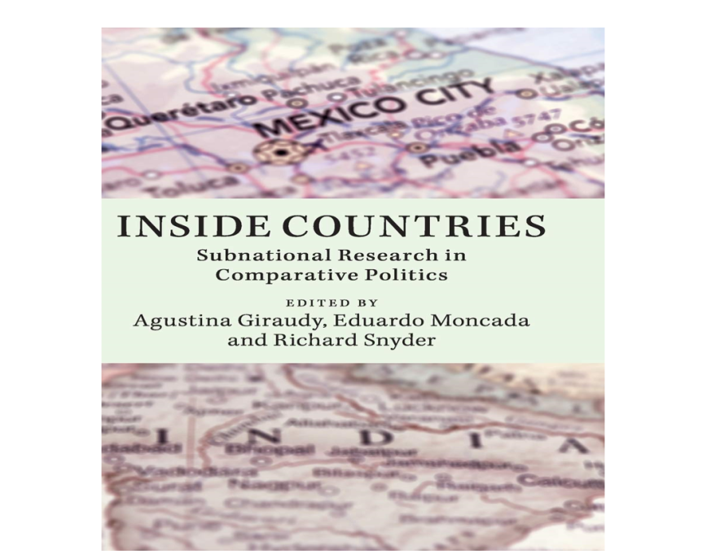

收录于合集 #比较政治学 121个
文献来源： Agustina Giraudy, Eduardo Moncada, and Richard Snyder. “Empirical and Theoretical Frontiers of Subnational Research in Comparative Politics.” in Giraudy, Agustina, Eduardo Moncada, and Richard Snyder, eds. Inside countries: Subnational research in comparative politics. New York: Cambridge University Press, 2019, pp.353-366.
作者简介： Agustina Giraudy，美利坚大学政治学系副教授；Eduardo Moncada，哥伦比亚大学政治学系助理教授；Richard Snyder，布朗大学政治学系教授。

在比较政治学中，次国家研究的份量愈加重要。对次国家的关注有助于我们发现那些隐藏在国家中心路径下的重要现象。次国家研究也刺激了理论创新，尤其是多层次理论的构建。在此，本文将探讨未来的次国家研究所要面对的理论和经验挑战。
经验前沿：
次国家数据的收集、标准化和集成
次国家研究在经验上的主要挑战就是数据的可得性问题。比较政治学研究中的“国家偏向"（whole-nation bias）导致学者们主要关注国家层面的数据，而全面、系统、便于使用的次国家数据则难以获取。次国家截面数据的稀缺限制了学者们的案例选择、分析性叙述以及假设检验；历史数据集的缺失也限制了学者关注长时段问题的能力。
不仅现有数据欠缺，在发展中地区生产、收集次国家数据也十分艰难。这一状况在20世纪末期发展中国家的分权化改革后变得尤为严重。发展中国家的地方政府往往缺乏全面收集数据的人力、物力和制度安排。
为了应对次国家数据获取难题，研究者们转向了空间分析工具。不论研究对象在空间上是否连续，地理信息系统（GIS）都可以帮助学者们获取诸如人口密度、经济发展、暴力、地形地貌等数据。高分辨率的卫星图像以及其他遥感设备为次国家的数据的生产提供了更多可能。例如，卫星图像可以在诸如战区等难以进入的地区收集信息。把卫星图像与其他地理编码数据相结合能形成大量的次国家数据。例如Nemeth等（2014）对于国内恐怖主义的研究，以及一些对内战的研究（Hegre et al. 2009; Schutte & Weidmann 2011; Hollenbach et al. 2016）都很好的使用了GIS和空间编码数据。但这种做法有一些问题。在不同研究中，对于同一指标的测量方法和测度范围都还有很大差别。次国家数据还要面对标准化的问题。
V-Dem（Varieties of Democracy dataset）数据集在长时段的次国家数据集方面做了很好的尝试。其中有22个关于次国家民主制度与实践的指标，涵盖了1900至2012年来除袖珍国家外的所有国家。Mariano Sanchez- Talanquer在拓展次国家数据的时间范围上也做出了突出的贡献。他使用档案材料、历史统计数据和对当代国家活动的测量来构建墨西哥和哥伦比亚地方政府的税收、大众教育、公民注册、地方安全水平以及其他国家活动的数据集。
次国家研究在未来应关注的另一个问题就是数据的集成问题，即次国家的变化如何影响着国家层面的相关概念的测量。许多研究都发现，对政治权利和社会权利的保障在国家内部的不同地区可能有很大的差别。目前对于民主、国家能力、福利等问题的测量基本都立足于国家层面，这一测量的前提假设是它们在国家内部的分布是一致的。正如Agustina Giraudy和Jennifer Pribble(2018)所说，国家层次上概念和测量领土性的缺乏极大限制了我们对于重要政治现象的理解。由此Giraudy和Pribble(2018)提出了领土基尼系数（Territorial Gini Indexes）用于修正国家层面对于民主和福利的测量。利用这一方法，她们发现，诸如智利等被认为在民主和社会福利上表现亮眼的国家，经领土修正数据的测量则表现出相当的空间不平等。
理论前沿：
次国家单位选择的挑战与理论构建的机遇
对次国家的关注让学者们可以在更多样的空间单位上进行分析。这既带来了理论构建的机遇，也带来了挑战。Hillel Soifer指出，次国家研究面临着可塑性单位面积元问题（modifiable areal unit problem MAUP），这一问题被地理学者所长期关注，但不少政治学者并没有清晰的认识。在研究中，变量之间的关系对于空间单位的形状、规模可能是高度敏感的。针对同一组变量，使用相同的数据，把它们归到不同的空间单位进行分析可能产生完全不同的结果，其相关性系数在-0.93-0.99之间变化（Soifer & Alvarez, 2017, p.3）。所谓可塑性单位面积元问题，即随着用于分析的空间单位的变化，我们研究的结果也随之改变。
为了应对这一难题，Soifer提出应根据理论来选择分析的空间单位。他将理论分为三种，一种是空间独立型理论，即理论可应用于任何空间单位；一种是特定空间型理论，即理论仅在特定空间单元成立；一种是有限空间型理论，即理论在部分空间单元上成立。
尽管不同的空间分析单位在很多方面都有重大的差别，但从理论的立场出发，它们可以具有分析上的等效性（analytically equivalent）。例如，劳资集体协商可以发生在从企业到行业再到国家的不同层次。Patrick Heller(2001)关于民主分权的研究就把巴西的Porto Alegre市、印度的Kerala邦和南非放在一块分析。尽管这三个案例分属不同的分析层次。Heller认为这三个案例共享一个重要的政治特征：都有一个立足基层的中左政党执政。此外，不同空间分析单位的比较也有利于强化案例间的匹配程度。例如，在以人口为解释变量或控制变量的研究中，印度一个邦的人口规模可能相当于阿根廷全国的人口规模。次国家的视角在案例选择上给了研究者更大的灵活性，并且有助于强化跨系统的等效性以及研究设计。
次国家分析在理论上所面临的另一个挑战就是行政单位和非行政空间单位的区别。以行政单位为基础的数据可获取性更高，因为许多社会科学分析的数据都是由政府提供的。然而，许多我们所关注的现象，例如犯罪、传染病、环境问题、自然灾害等问题并不为行政单位所限制。面对这种“无边界的现象”（unbound phenomena），一种处理方式是使用标准化的网格来分割地域。这一方法还避免了行政区划本身可能会带来的内生性的问题。当然这种方式要面对比较严重的数据获得性问题。另一种方式是将这种无边界现象与行政边界的错配利用起来。例如Richard Snyder和Angelica Duran- Martinez(2009)的研究发现，墨西哥执法边界在90年代发生了重大变化。但是几个贩毒的卡特尔组织的分布仍然与旧的执法边界相一致。这种犯罪组织分布与行政执法边界的错配支撑了长期以来国家资助的保护措施的崩溃以及暴力犯罪的激增。在次国家研究中，还有一些分析单位可能是非领土性的（non- territorial），例如那些在地理上并不聚居的族群。和对无边界现象的处理类似，非领土次国家单位与领土性次国家单位的错配同样可能为理论构建带来无限可能。
结论：在不同层次推动知识的进步
次国家研究为比较政治学提供了一个值得重视的、强有力的和令人兴奋的研究路径。正如我们在这本论文集中所看到的那样，次国家研究已经在政治学领域做出了重要贡献。但我们并不是要求所有比较政治学研究都要在次国家的层次上展开。民族国家仍然是建构全球政治的重要单元，公民身份、政治认同仍然以民族国家为中心而构建。社会科学研究中对国家的关注仍然很集中，而且这一趋势也将持续下去。我们希望学者们能对一组问题展开跨层次的研究。这种跨层次的分析的潜能已经在本书中得到了展示和验证。我们希望这本书能够启发更多的人去应对次国家研究在理论和经验上的挑战，就像他们尝试去理解国内外其他重要难题那样。
注： 本文是论文集Inside countries: Subnational research in comparative politics的最后一章，章节DOI获取参见：https://www.cambridge.org/core/books/inside- countries/CEBCCFE10E8EB4BC93A7773A72868456
编译：赵德昊 审校：杨端程 编辑：康张城